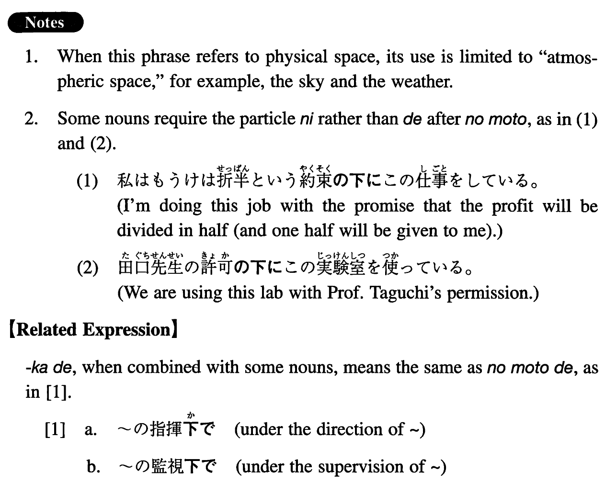

←
DoJG
→
の下で
(I. 310)
Example sentences
(ks).
私は鈴木先生の指導
の下で
修士論文を書き上げた。
I finished my master's thesis under Professor Suzuki's guidance.
(a).
さんさんたる太陽
の下で
開会式が行われた。
The opening ceremony was held in (literally: under) the brilliant sun.
(b).
彼はカラヤン
の下で
指導法を学んだ。
He studied conducting under (Herbert von) Karajan.
(c).
弁護士（の）立ち会い
の下で
私達の離婚が成立した。
Our divorce was agreed upon in (literally: under) the presence of attorneys.
(d).
囚人達は厳しい監視
の下で
強制労働をさせられた。
The prisoners were forced to work under strict supervision.
(e).
このインフレ
の下で
は金を貯めても意味がない。
With this inflation there's no point in saving money.
Formation
Noun
の下で
学部長の指揮
の下で
Under the direction of the dean
